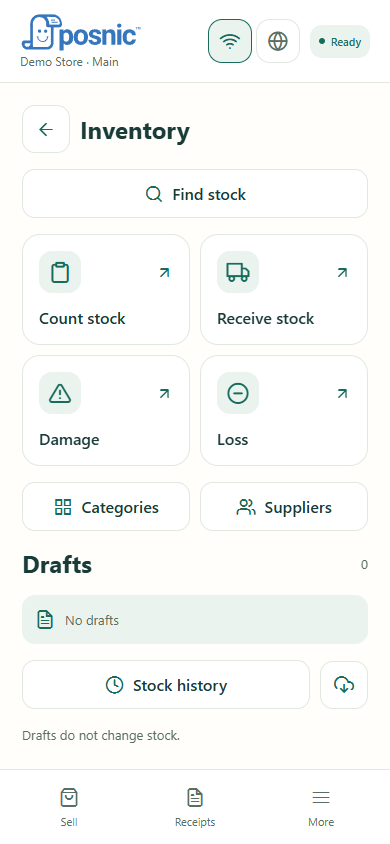
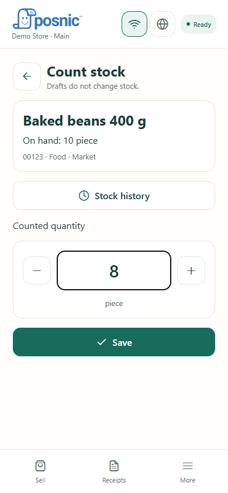
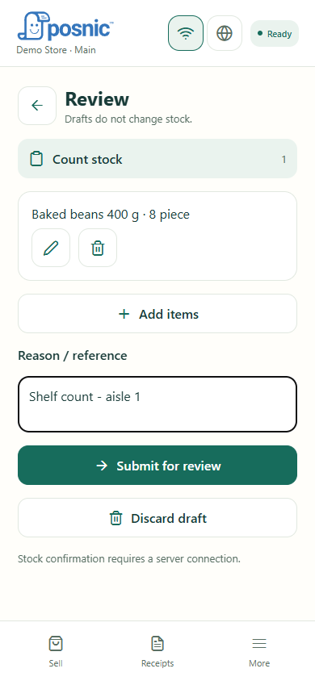
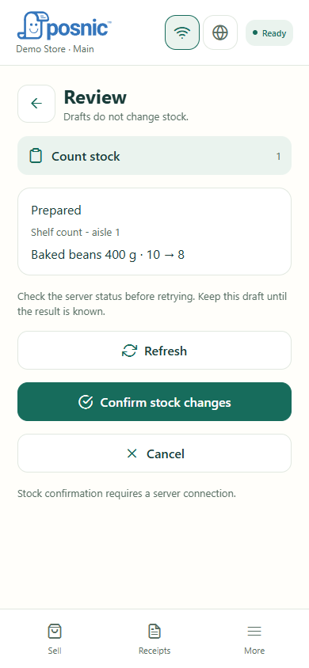
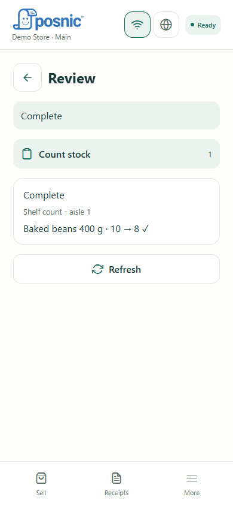
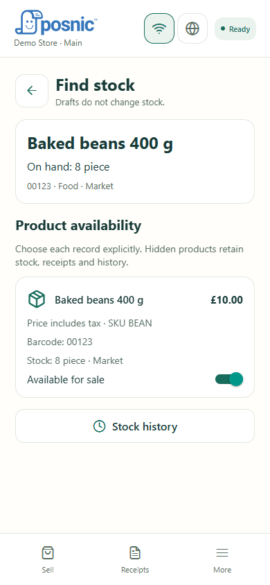

STOCK VERIFICATION
Check stock. Count it. Verify the update.
Use Posnic Mobile to compare recorded stock with the physical shelf count and confirm a correction. This example changes a product from 10 pieces to 8 pieces.
Use the correct shop and branch. Stock updates require permission and a server connection at confirmation. Drafts do not change stock.
STEP 1
Open Inventory
Open Inventory in Posnic Mobile. Check the shop and branch at the top. Choose Find stock to inspect an item before changing it.

STEP 2
Check the item and current stock
Search or scan, then open the product. Match its name, barcode and unit to the item in your hand. On hand is the quantity currently recorded. In this example it is 10 pieces.
STEP 3
Enter the physical count
Return to Inventory and choose Count stock. Select the product and enter the quantity you actually counted. Here we counted 8, so enter 8 and tap Save. Do not enter the difference of 2. Use Receive stock for a delivery instead.

STEP 4
Review your draft
Tap Review, check every item and quantity, and enter a reason/reference. Then tap Submit for review. Saving or submitting a draft alone does not change stock.

STEP 5
Confirm the proposed change
Check the proposed change: 10 → 8. An authorised user taps Confirm stock changes (or Approve when approval is required). This needs a server connection. If the result is uncertain, check status before retrying.

STEP 6
Wait for Complete
Wait until the operation shows Complete. If you see Conflict, refresh and recount only unresolved items. Already-applied lines stay applied; do not submit them again.

STEP 7
Verify the result
Return to Find stock and reopen the item. On hand should now show 8. Open Stock history to review the recorded change. Other devices show the update after successful synchronisation.

If something does not match
- Offline: only downloaded records may be visible. Connect before confirming changes.
- Conflict: another stock movement may have happened. Refresh and recount unresolved items.
- No update permission: ask an authorised manager to review and approve.
- Uncertain result: keep the draft and check server status before retrying.